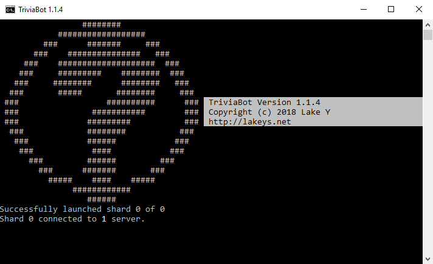

TriviaBot
Manual Install Guide
Contribute Questions
Support it on Patreon
In partnership with:
discords.com
+ Invite
TriviaBot is open-source and can be downloaded for free. This guide shows you how to install TriviaBot on a Windows or Linux system. Note that installing TriviaBot using this method is completely optional for most cases. For general use, you can simply invite TriviaBot to your server directly.
If you enjoy using TriviaBot as a free and open source application, please consider supporting it on patreon.
Download TriviaBot for Windows Download TriviaBot for Linux Table of Contents
1. How to Install - Windows1.1: Creating the bot account
1.2: Setting up the bot
1.3: Run the bot!
2. How to Install - Linux
2.0.1: Raspberry Pi/Raspbian OS
2.1: Creating the bot account
2.2: Setting up the bot
2.3: Run the bot!
3. Usage Instructions
3.1: Configuration
3.1.1: Game Configuration
3.1.2: Global Configuration
3.1.3: Maintenance Configuration
3.1.4: Changing Configuration Using Commands
4. How to Set Up Custom Questions
4.1. Custom Question Limitations
4.2. Optional Configurations for Custom Questions
4.2.1: How to Add Additional Answer Info (Answer Extensions)
4.2.2: How to Add Images to Questions and Answers
5. How to Set Up TriviaBot as a Service on Linux
How to Install - Windows

Creating the bot account
- Log in to the Discord Developer Portal and click "New application". Name the bot anything you like and click Create. Copy or write down the application ID as you will need it for later.
- On the left hand side, click "Bot". Now click the "Add Bot" button to create your bot. Here you can set an avatar for your bot if desired.
- Under "Token" click the link that says "click to reveal". This is the password for your bot's account. You'll need this and the Client ID number later. Copy them both somewhere safe or keep the tab open.
- Paste the URL listed below into your browser and replace "CLIENT_ID" with your application ID number from earlier. Hit enter and select the desired Discord server. Once this is done, the bot will show up in your server!
Setting up the bot
- Download the TriviaBot program and extract it somewhere on your system.
- Install Node.js (Current, not LTS) from this website.
- Once Node.js is finished installing, run install.bat in the bot's folder. This will automatically install the required modules for the bot.
- Right click the config.example.json file, click "rename", and rename this file to config.json.
- Right click your new config.json file and click "Edit", or open the file in your preferred text editor.
- Find "your_token_here" and replace it with the Discord token from earlier.
Run the bot!
Once you complete all of this, you will be able to run the bot by opening run.bat. If you've done all of this correctly, you will see the following in the terminal: TriviaBot connected to 1 Discord Server.
Note that if you close this terminal the bot will be disconnected. In Windows, the bot can be run in the background with no terminal by opening run_silent.vbs.
You may want to create a shortcut to run.bat or run_silent.vbs in your Startup folder:
C:\Users\[YOURNAME]\AppData\Roaming\Microsoft\Windows\Start Menu\Programs\Startup
How to Install - Linux
Raspberry Pi/Raspbian OS
TriviaBot can be run from a Raspberry Pi device by installing Node.js.
First, follow the Node.js install instructions found here under "Debian and Ubuntu based Linux distributions". Once this is done, you can proceed with the instructions below. You may need access to a desktop computer in order to create the bot account.
Creating the bot account
- Log in to the Discord Developer Portal and click "New application". Name the bot anything you like and click Create. Copy or write down the application ID as you will need it for later.
- On the left hand side, click "Bot". Now click the "Add Bot" button to create your bot. Here you can set an avatar for your bot if desired.
- Under "Token" click the link that says "click to reveal". This is the password for your bot's account. You'll need this and the Client ID number later. Copy them both somewhere safe or keep the tab open.
- Paste the URL listed below into your browser and replace "CLIENT_ID" with your application ID number from earlier. Hit enter and select the desired Discord server. Once this is done, the bot will show up in your server!
Setting up the bot
- Open a terminal on your system.
- (Skip this step if installing to a Raspberry Pi device.) Install the current version of Node.js and NPM (16.6 is required at minimum). Install build tools if instructed. How to install via package manager.
- Type curl -L http://lakeys.net/triviabot/dl/triviabot.tar.gz > triviabot.tar.gz to download the bot's files to an archive named triviabot.tar.gz.
- Type tar -xzf triviabot.tar.gz to extract the archive. This will create a directory named "TriviaBot". Navigate to the directory with cd TriviaBot.
- Type sudo chmod +x run.sh. This gives you permission to execute run.sh. (If this does not work, try chmod +x run.sh)
- Type npm install to install the required packages for the bot to run.
- Rename the config.example.json file to config.json.
- Open config.json in a text editor.
- Replace "your_token_here" with the Discord bot token from earlier.
Run the bot!
Once you complete all of this, you will be able to run the bot by executing run.sh (Navigate to the bot's directory and enter ./run.sh). If you've done all of this correctly, you will see the following: TriviaBot connected to 1 Discord Server.
Usage Instructions
Configuration
The bot can be configured by editing config.json. See below for documentation on the config options.
Game Configuration
- disable-admin-commands - Disables all commands that are only usable by administrators. (for example, the "trivia stop" command)
- use-reactions - Enables reaction mode. In reaction mode, answers are given using reactions rather than typed responses. NOTE: Reaction mode games can also be started using the 'trivia play advanced' command.
- hangman-mode - Enables hangman mode. In this mode, answers are given by typing them out rather than choosing from a list of choices. NOTE: Hangman games can also be started using the 'trivia play advanced' command.
- hangman-hints - Enables hints in hangman mode.
- prefix - The prefix that users must type before each command. For example, changing this to "!" means users will need to type "!help" for the help command.
- hide-difficulty - When enabled, games will not show their difficulty color. The embed will be blue instead.
- auto-delete-msgs - The bot will automatically delete all of its messages after 15 seconds. This option will not delete players' answers.
- auto-delete-msgs-timer - Approximate time in milliseconds until the bot deletes its own messages.
- auto-delete-answers - The bot will automatically delete players' typed answers. Does not apply to reaction mode. Beware: Not an effective way to hide answers entirely! Determined cheaters can still snoop the answers before they disappear.
- auto-delete-answers-timer - Approximate time in milliseconds until the bot deletes answers when auto-delete-answers is enabled. 0 being as quickly as possible. Accuracy may vary by network.
- reveal-answers - When disabled, the bot will not display the anwer at the end of the round -- only which players answered correctly.
- round-length - How long each round lasts in milliseconds. Note that hangman games will add 10 extra seconds to this value.
- round-timeout - The amount of time between rounds in milliseconds.
- round-end-warnings-disabled - Disables the "game will end if nobody participates" warnings.
- rounds-end-after - How many inactive rounds (where no answers are given) are allowed before a game automatically ends.
- disable-score-display-midround - Prevents the bot from displaying users' scores between rounds.
- disable-score-display-final - Prevents the bot from displaying users' scores at the end of a game.
- score-value - How many points are awarded for each question, based on difficulty.
- unique-multiplier-max - Allows for setting a bonus multiplier for questions. Bonuses are given based on how many other players get the question incorrect. Default is 0, which has no effect. Recommended value is 2 for balance.
- command-whitelist - A whitelist of users that can use commands. Can be a user tag (i.e. "Lake#4898") or a user ID (i.e. "128263376659939328")
Example: ["Lake#4898", "LakeTest#9924", "Cake#7123"]
- use-fixed-rounds - When enabled, games will run for a set number of rounds.
- rounds-fixed-number - How many rounds the bot will run for when use-fixed-rounds is enabled.
- accept-first-answer-only - When enabled, only the first answer each player enters will be accepted -- answer changes will be ignored.
Global Configuration
- allow-eval - When enabled, the console will accept commands and JavaScript code. This is disabled by default due to known issues with the bot starting up.
- debug-mode - Debug mode for testing purposes. When enabled, the correct answer to each question will be marked.
- shard-count - How many shards will be spawned. This is only necessary if the bot is in over 2,000 guilds. See the Discord sharding documentation for more information.
- disable-version-check - When enabled, the application will not check for new versions on startup. It is strongly recommended that this stays enabled unless there is a severe problem with the version check.
- allow-bots - Whether other bots are allowed to provide answers. Please be mindful and avoid spamming the Open Trivia Database with unnecessary requests.
- databaseURL - The database URL you want to use. See Setting Up Custom Questions for more info. If using the http or https protocol, the server behind it must be functionally identical to the Open Trivia Database API.
- database-merge - For use with file-based custom trivia databases. Allows the use of custom trivia questions along with OpenTDB questions. See Setting Up Custom Questions for more info.
- database-cache-size - How many questions the bot will cache on startup. Max: 50
- database-allow-long-answers - Allows answers to be longer than 80 characters without an error on startup. Due to Discord's limit of 80 characters, buttons may not display correctly if this is enabled.
- stat-file - Which file to store statistics in.
- embed-color - The default color that the bot's embeds will use.
- channel-whitelist - If any channels are specified, the bot will only work in those channels. Can specify either a channel name or an ID. Example: "channel-whitelist": [ "trivia-dev", "trivia-dev2", "261705677943209984" ]
Maintenance Configuration
A lot of the options in this section are deprecated and/or unused. Here are the ones that are still in use:
- fallback-mode - When enabled, the bot will start in "fallback mode". The bot will not send any messages in fallback mode. Message IDs are displayed in the console.
- fallback-silent - Disables the message ID display while in fallback mode.
- fallback-exceptions - Channels where the bot will still send messages while in fallback mode.
Changing Configuration Using Commands
Example: ["Lake#4898", "LakeTest#9924", "Cake#7123"]
- allow-eval - When enabled, the console will accept commands and JavaScript code. This is disabled by default due to known issues with the bot starting up.
- debug-mode - Debug mode for testing purposes. When enabled, the correct answer to each question will be marked.
- shard-count - How many shards will be spawned. This is only necessary if the bot is in over 2,000 guilds. See the Discord sharding documentation for more information.
- disable-version-check - When enabled, the application will not check for new versions on startup. It is strongly recommended that this stays enabled unless there is a severe problem with the version check.
- allow-bots - Whether other bots are allowed to provide answers. Please be mindful and avoid spamming the Open Trivia Database with unnecessary requests.
- databaseURL - The database URL you want to use. See Setting Up Custom Questions for more info. If using the http or https protocol, the server behind it must be functionally identical to the Open Trivia Database API.
- database-merge - For use with file-based custom trivia databases. Allows the use of custom trivia questions along with OpenTDB questions. See Setting Up Custom Questions for more info.
- database-cache-size - How many questions the bot will cache on startup. Max: 50
- database-allow-long-answers - Allows answers to be longer than 80 characters without an error on startup. Due to Discord's limit of 80 characters, buttons may not display correctly if this is enabled.
- stat-file - Which file to store statistics in.
- embed-color - The default color that the bot's embeds will use.
- channel-whitelist - If any channels are specified, the bot will only work in those channels. Can specify either a channel name or an ID. Example: "channel-whitelist": [ "trivia-dev", "trivia-dev2", "261705677943209984" ]
Maintenance Configuration
A lot of the options in this section are deprecated and/or unused. Here are the ones that are still in use:
- fallback-mode - When enabled, the bot will start in "fallback mode". The bot will not send any messages in fallback mode. Message IDs are displayed in the console.
- fallback-silent - Disables the message ID display while in fallback mode.
- fallback-exceptions - Channels where the bot will still send messages while in fallback mode.
Changing Configuration Using Commands
Setting the config-commands-enabled option to true enables the admin "trivia config" and "trivia reset" admin commands.
trivia config <option> <value> <channel (optional)>
The "trivia config" command can be used to change values in config. Values can be surrounded with quotes when necessary, for example to reset the prefix to "trivia " (trivia config prefix "trivia "). Options can be removed by typing "trivia config null".
Beware that this will change line spacing of the config file; it is recommended that you create a backup.
The "trivia reset" command restarts the bot to apply config changes. All options currently require a restart before they take effect.
Specifying a channel will cause the config to only take effect in that channel. Channel-based options are stored in Options/{channelid}_config.json in the bot's folder.
Setting Up Custom Questions
One of the perks of self-hosting TriviaBot is that you can add your own questions! Here's how:- Open your config.json and look for "databaseURL". Replace https://opentdb.com with file://./Questions. You can use a different file path if desired.
- Enter the questions folder. Inside, you'll find a sample database. The sample database shows you how to format your questions and categories.
- In order to use these files, you will need to rename them to remove .example.. Rename categories.example.yml to categories.yml, questions_0.example.yml to questions_0.yml, etc.
- Open the categories.yml file in a text editor. Here, you can add, delete, and edit categories as needed. When creating a new category, make sure you have a matching file for it, named questions_ID.yml.
- Now edit the question files for your new categories. The included files, named "questions_0.yml", "questions_1.yml", and "questions_2.yml" all contain sample questions.
- Replace the example quetions as needed and, following the same format, add your own.
- If you want to have the questions from the Open Trivia Database along with your custom questions, enter the bot's config.json file and change "database-merge" to true.
- Now start the bot and test your questions! Typing "trivia help" and "trivia categories" will show you how many questions you have added.
Custom Question Limitations
Custom questions have a few restrictions:- Answers should not be longer than 80 characters unless you are using them for hangman mode. Answers greater than 80 characters will cause an error unless hangman mode is on, or you set allow-long-answers to true in config.
- Each answer must have three "incorrect answers" specified -- even if you only intend to use them for hangman mode. This requirement will be removed for hangman setup in a future update.
Optional Configurations for Custom Questions
How to Add Additional Answer Info (Answer Extensions)
You can add an additional comment or clarification to your custom questions by adding the answer_extension field to your question. Any text you enter in this field will display with the answer at the end of round.
Your answer extensions can include links.
Example formatting for answer extensions:
How to Add Images to Questions and Answers
You can specify an image to display on either the question, answer, or both, using the corresponding fields: question_image and answer_image
Each image must be posted with a link. If an invalid link is specified, your image will not appear.
Example formatting for images:
How to Set Up TriviaBot as a Service on Linux
Once you have the bot set up on linux, you may find it more convenient to run the bot as a service.
Before starting, make sure the bot is not already running.
- Create and open the file /etc/systemd/system/triviabot.service. Make sure to open it with sudo/admin permissions or the file will not be writable.
- Fill it with the following text, and replace the items in {brackets} with the relevant information below:
[Service] ExecStart=/usr/bin/npm start WorkingDirectory={File Path} Restart=always StandardOutput=syslog StandardError=syslog SyslogIdentifier=triviabot User={Username} [Install] WantedBy=multi-user.target
- {File Path} - The path to the directory that the bot is in. Example: `/home/{Username}/TriviaBot`
- {Username} The name of the user the bot will run on. WARNING: To ensure security of your system, it is strongly recommended that you DO NOT use root.
- Save the file and use the command systemctl enable triviabot, then systemctl start triviabot. This will start the bot.
- Wait a few seconds, then type systemctl status triviabot to see if the bot started successfully. If an error displays, double-check to make sure that both the bot and the triviabot.service file are configured correctly. Be sure to type systemctl daemon-reload after making any corrections to triviabot.service.
You can now use the following commands to manage the bot: sytstemctl stop triviabot, sytstemctl start triviabot, sytstemctl restart triviabot, and sytstemctl status triviabot. Use sudo with these commands to avoid re-entering the password each time.